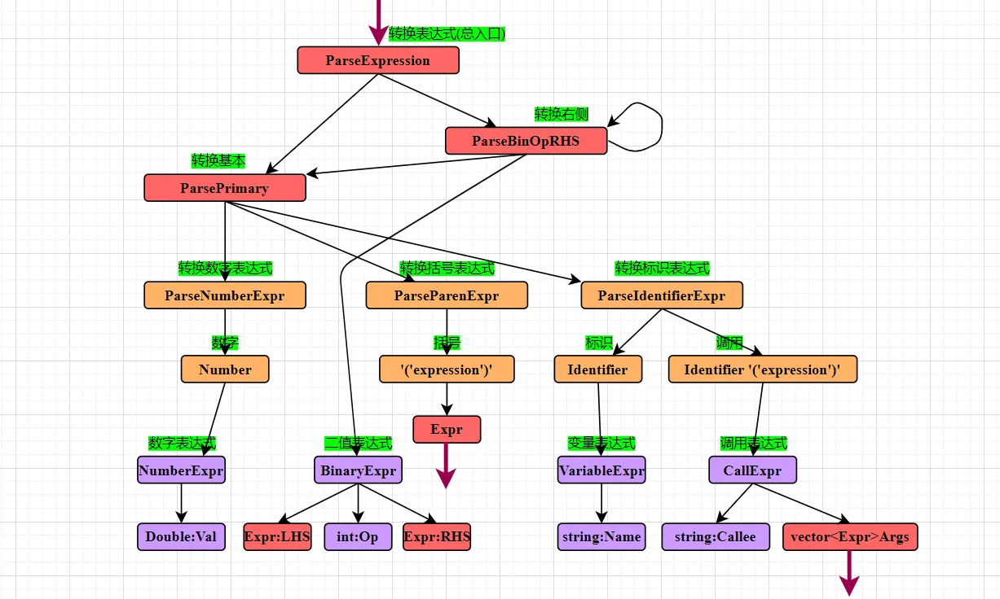

# 前言
本篇介绍如何使用 LLVM 编译自定义语言。使用的是 LLVM 官方例子 My First Language Frontend with LLVM Tutorial。官方例子采用自底向上的方式详细讲述了自定义万花筒语言通过 llvm 编译的过程，但是自底向上较难理解，过程较长。本篇将自上而下地、简要地介绍如何将自定义语言转换为 llvm IR，实现编译的。
尽管官方用例非常详细，笔者在阅读的时候仍然感到内容多，较 “散”，难以把握。每当这时候我会选择从上而下，整理归类，最后发现知识就具象化了。本篇介绍无法代替官方教程，感兴趣请参考 My First Language Frontend with LLVM Tutorial。
作为初学者，错误在所难免，还望不吝赐教。
# 编译运行
直接拷贝官方例子第四节代码：官方代码
这一章的代码，已经实现了将自定义万花筒语言编译称为一种即时编译的解释型语言，可以逐行读取并执行代码。
#include "../include/KaleidoscopeJIT.h" | |
#include "llvm/ADT/APFloat.h" | |
#include "llvm/ADT/STLExtras.h" | |
#include "llvm/IR/BasicBlock.h" | |
#include "llvm/IR/Constants.h" | |
#include "llvm/IR/DerivedTypes.h" | |
#include "llvm/IR/Function.h" | |
#include "llvm/IR/IRBuilder.h" | |
#include "llvm/IR/LLVMContext.h" | |
#include "llvm/IR/Module.h" | |
#include "llvm/IR/PassManager.h" | |
#include "llvm/IR/Type.h" | |
#include "llvm/IR/Verifier.h" | |
#include "llvm/Passes/PassBuilder.h" | |
#include "llvm/Passes/StandardInstrumentations.h" | |
#include "llvm/Support/TargetSelect.h" | |
#include "llvm/Target/TargetMachine.h" | |
#include "llvm/Transforms/InstCombine/InstCombine.h" | |
#include "llvm/Transforms/Scalar.h" | |
#include "llvm/Transforms/Scalar/GVN.h" | |
#include "llvm/Transforms/Scalar/Reassociate.h" | |
#include "llvm/Transforms/Scalar/SimplifyCFG.h" | |
#include <algorithm> | |
#include <cassert> | |
#include <cctype> | |
#include <cstdint> | |
#include <cstdio> | |
#include <cstdlib> | |
#include <map> | |
#include <memory> | |
#include <string> | |
#include <vector> | |
using namespace llvm; | |
using namespace llvm::orc; | |
//===----------------------------------------------------------------------===// | |
// Lexer | |
//===----------------------------------------------------------------------===// | |
// The lexer returns tokens [0-255] if it is an unknown character, otherwise one | |
// of these for known things. | |
enum Token { | |
tok_eof = -1, | |
// commands | |
tok_def = -2, | |
tok_extern = -3, | |
// primary | |
tok_identifier = -4, | |
tok_number = -5 | |
}; | |
static std::string IdentifierStr; // Filled in if tok_identifier | |
static double NumVal; // Filled in if tok_number | |
/// gettok - Return the next token from standard input. | |
static int gettok() { | |
static int LastChar = ' '; | |
// Skip any whitespace. | |
while (isspace(LastChar)) | |
LastChar = getchar(); | |
if (isalpha(LastChar)) { // identifier: [a-zA-Z][a-zA-Z0-9]* | |
IdentifierStr = LastChar; | |
while (isalnum((LastChar = getchar()))) | |
IdentifierStr += LastChar; | |
if (IdentifierStr == "def") | |
return tok_def; | |
if (IdentifierStr == "extern") | |
return tok_extern; | |
return tok_identifier; | |
} | |
if (isdigit(LastChar) || LastChar == '.') { // Number: [0-9.]+ | |
std::string NumStr; | |
do { | |
NumStr += LastChar; | |
LastChar = getchar(); | |
} while (isdigit(LastChar) || LastChar == '.'); | |
NumVal = strtod(NumStr.c_str(), nullptr); | |
return tok_number; | |
} | |
if (LastChar == '#') { | |
// Comment until end of line. | |
do | |
LastChar = getchar(); | |
while (LastChar != EOF && LastChar != '\n' && LastChar != '\r'); | |
if (LastChar != EOF) | |
return gettok(); | |
} | |
// Check for end of file. Don't eat the EOF. | |
if (LastChar == EOF) | |
return tok_eof; | |
// Otherwise, just return the character as its ascii value. | |
int ThisChar = LastChar; | |
LastChar = getchar(); | |
return ThisChar; | |
} | |
//===----------------------------------------------------------------------===// | |
// Abstract Syntax Tree (aka Parse Tree) | |
//===----------------------------------------------------------------------===// | |
namespace { | |
/// ExprAST - Base class for all expression nodes. | |
class ExprAST { | |
public: | |
virtual ~ExprAST() = default; | |
virtual Value *codegen() = 0; | |
}; | |
/// NumberExprAST - Expression class for numeric literals like "1.0". | |
class NumberExprAST : public ExprAST { | |
double Val; | |
public: | |
NumberExprAST(double Val) : Val(Val) {} | |
Value *codegen() override; | |
}; | |
/// VariableExprAST - Expression class for referencing a variable, like "a". | |
class VariableExprAST : public ExprAST { | |
std::string Name; | |
public: | |
VariableExprAST(const std::string &Name) : Name(Name) {} | |
Value *codegen() override; | |
}; | |
/// BinaryExprAST - Expression class for a binary operator. | |
class BinaryExprAST : public ExprAST { | |
char Op; | |
std::unique_ptr<ExprAST> LHS, RHS; | |
public: | |
BinaryExprAST(char Op, std::unique_ptr<ExprAST> LHS, | |
std::unique_ptr<ExprAST> RHS) | |
: Op(Op), LHS(std::move(LHS)), RHS(std::move(RHS)) {} | |
Value *codegen() override; | |
}; | |
/// CallExprAST - Expression class for function calls. | |
class CallExprAST : public ExprAST { | |
std::string Callee; | |
std::vector<std::unique_ptr<ExprAST>> Args; | |
public: | |
CallExprAST(const std::string &Callee, | |
std::vector<std::unique_ptr<ExprAST>> Args) | |
: Callee(Callee), Args(std::move(Args)) {} | |
Value *codegen() override; | |
}; | |
/// PrototypeAST - This class represents the "prototype" for a function, | |
/// which captures its name, and its argument names (thus implicitly the number | |
/// of arguments the function takes). | |
class PrototypeAST { | |
std::string Name; | |
std::vector<std::string> Args; | |
public: | |
PrototypeAST(const std::string &Name, std::vector<std::string> Args) | |
: Name(Name), Args(std::move(Args)) {} | |
Function *codegen(); | |
const std::string &getName() const { return Name; } | |
}; | |
/// FunctionAST - This class represents a function definition itself. | |
class FunctionAST { | |
std::unique_ptr<PrototypeAST> Proto; | |
std::unique_ptr<ExprAST> Body; | |
public: | |
FunctionAST(std::unique_ptr<PrototypeAST> Proto, | |
std::unique_ptr<ExprAST> Body) | |
: Proto(std::move(Proto)), Body(std::move(Body)) {} | |
Function *codegen(); | |
}; | |
} // end anonymous namespace | |
//===----------------------------------------------------------------------===// | |
// Parser | |
//===----------------------------------------------------------------------===// | |
/// CurTok/getNextToken - Provide a simple token buffer. CurTok is the current | |
/// token the parser is looking at. getNextToken reads another token from the | |
/// lexer and updates CurTok with its results. | |
static int CurTok; | |
static int getNextToken() { return CurTok = gettok(); } | |
/// BinopPrecedence - This holds the precedence for each binary operator that is | |
/// defined. | |
static std::map<char, int> BinopPrecedence; | |
/// GetTokPrecedence - Get the precedence of the pending binary operator token. | |
static int GetTokPrecedence() { | |
if (!isascii(CurTok)) | |
return -1; | |
// Make sure it's a declared binop. | |
int TokPrec = BinopPrecedence[CurTok]; | |
if (TokPrec <= 0) | |
return -1; | |
return TokPrec; | |
} | |
/// LogError* - These are little helper functions for error handling. | |
std::unique_ptr<ExprAST> LogError(const char *Str) { | |
fprintf(stderr, "Error: %s\n", Str); | |
return nullptr; | |
} | |
std::unique_ptr<PrototypeAST> LogErrorP(const char *Str) { | |
LogError(Str); | |
return nullptr; | |
} | |
static std::unique_ptr<ExprAST> ParseExpression(); | |
/// numberexpr ::= number | |
static std::unique_ptr<ExprAST> ParseNumberExpr() { | |
auto Result = std::make_unique<NumberExprAST>(NumVal); | |
getNextToken(); // consume the number | |
return std::move(Result); | |
} | |
/// parenexpr ::= '(' expression ')' | |
static std::unique_ptr<ExprAST> ParseParenExpr() { | |
getNextToken(); // eat (. | |
auto V = ParseExpression(); | |
if (!V) | |
return nullptr; | |
if (CurTok != ')') | |
return LogError("expected ')'"); | |
getNextToken(); // eat ). | |
return V; | |
} | |
/// identifierexpr | |
/// ::= identifier | |
/// ::= identifier '(' expression* ')' | |
static std::unique_ptr<ExprAST> ParseIdentifierExpr() { | |
std::string IdName = IdentifierStr; | |
getNextToken(); // eat identifier. | |
if (CurTok != '(') // Simple variable ref. | |
return std::make_unique<VariableExprAST>(IdName); | |
// Call. | |
getNextToken(); // eat ( | |
std::vector<std::unique_ptr<ExprAST>> Args; | |
if (CurTok != ')') { | |
while (true) { | |
if (auto Arg = ParseExpression()) | |
Args.push_back(std::move(Arg)); | |
else | |
return nullptr; | |
if (CurTok == ')') | |
break; | |
if (CurTok != ',') | |
return LogError("Expected ')' or ',' in argument list"); | |
getNextToken(); | |
} | |
} | |
// Eat the ')'. | |
getNextToken(); | |
return std::make_unique<CallExprAST>(IdName, std::move(Args)); | |
} | |
/// primary | |
/// ::= identifierexpr | |
/// ::= numberexpr | |
/// ::= parenexpr | |
static std::unique_ptr<ExprAST> ParsePrimary() { | |
switch (CurTok) { | |
default: | |
return LogError("unknown token when expecting an expression"); | |
case tok_identifier: | |
return ParseIdentifierExpr(); | |
case tok_number: | |
return ParseNumberExpr(); | |
case '(': | |
return ParseParenExpr(); | |
} | |
} | |
/// binoprhs | |
/// ::= ('+' primary)* | |
static std::unique_ptr<ExprAST> ParseBinOpRHS(int ExprPrec, | |
std::unique_ptr<ExprAST> LHS) { | |
// If this is a binop, find its precedence. | |
while (true) { | |
int TokPrec = GetTokPrecedence(); | |
// If this is a binop that binds at least as tightly as the current binop, | |
// consume it, otherwise we are done. | |
if (TokPrec < ExprPrec) | |
return LHS; | |
// Okay, we know this is a binop. | |
int BinOp = CurTok; | |
getNextToken(); // eat binop | |
// Parse the primary expression after the binary operator. | |
auto RHS = ParsePrimary(); | |
if (!RHS) | |
return nullptr; | |
// If BinOp binds less tightly with RHS than the operator after RHS, let | |
// the pending operator take RHS as its LHS. | |
int NextPrec = GetTokPrecedence(); | |
if (TokPrec < NextPrec) { | |
RHS = ParseBinOpRHS(TokPrec + 1, std::move(RHS)); | |
if (!RHS) | |
return nullptr; | |
} | |
// Merge LHS/RHS. | |
LHS = | |
std::make_unique<BinaryExprAST>(BinOp, std::move(LHS), std::move(RHS)); | |
} | |
} | |
/// expression | |
/// ::= primary binoprhs | |
/// | |
static std::unique_ptr<ExprAST> ParseExpression() { | |
auto LHS = ParsePrimary(); | |
if (!LHS) | |
return nullptr; | |
return ParseBinOpRHS(0, std::move(LHS)); | |
} | |
/// prototype | |
/// ::= id '(' id* ')' | |
static std::unique_ptr<PrototypeAST> ParsePrototype() { | |
if (CurTok != tok_identifier) | |
return LogErrorP("Expected function name in prototype"); | |
std::string FnName = IdentifierStr; | |
getNextToken(); | |
if (CurTok != '(') | |
return LogErrorP("Expected '(' in prototype"); | |
std::vector<std::string> ArgNames; | |
while (getNextToken() == tok_identifier) | |
ArgNames.push_back(IdentifierStr); | |
if (CurTok != ')') | |
return LogErrorP("Expected ')' in prototype"); | |
// success. | |
getNextToken(); // eat ')'. | |
return std::make_unique<PrototypeAST>(FnName, std::move(ArgNames)); | |
} | |
/// definition ::= 'def' prototype expression | |
static std::unique_ptr<FunctionAST> ParseDefinition() { | |
getNextToken(); // eat def. | |
auto Proto = ParsePrototype(); | |
if (!Proto) | |
return nullptr; | |
if (auto E = ParseExpression()) | |
return std::make_unique<FunctionAST>(std::move(Proto), std::move(E)); | |
return nullptr; | |
} | |
/// toplevelexpr ::= expression | |
static std::unique_ptr<FunctionAST> ParseTopLevelExpr() { | |
if (auto E = ParseExpression()) { | |
// Make an anonymous proto. | |
auto Proto = std::make_unique<PrototypeAST>("__anon_expr", | |
std::vector<std::string>()); | |
return std::make_unique<FunctionAST>(std::move(Proto), std::move(E)); | |
} | |
return nullptr; | |
} | |
/// external ::= 'extern' prototype | |
static std::unique_ptr<PrototypeAST> ParseExtern() { | |
getNextToken(); // eat extern. | |
return ParsePrototype(); | |
} | |
//===----------------------------------------------------------------------===// | |
// Code Generation | |
//===----------------------------------------------------------------------===// | |
static std::unique_ptr<LLVMContext> TheContext; | |
static std::unique_ptr<Module> TheModule; | |
static std::unique_ptr<IRBuilder<>> Builder; | |
static std::map<std::string, Value *> NamedValues; | |
static std::unique_ptr<KaleidoscopeJIT> TheJIT; | |
static std::unique_ptr<FunctionPassManager> TheFPM; | |
static std::unique_ptr<LoopAnalysisManager> TheLAM; | |
static std::unique_ptr<FunctionAnalysisManager> TheFAM; | |
static std::unique_ptr<CGSCCAnalysisManager> TheCGAM; | |
static std::unique_ptr<ModuleAnalysisManager> TheMAM; | |
static std::unique_ptr<PassInstrumentationCallbacks> ThePIC; | |
static std::unique_ptr<StandardInstrumentations> TheSI; | |
static std::map<std::string, std::unique_ptr<PrototypeAST>> FunctionProtos; | |
static ExitOnError ExitOnErr; | |
Value *LogErrorV(const char *Str) { | |
LogError(Str); | |
return nullptr; | |
} | |
Function *getFunction(std::string Name) { | |
// First, see if the function has already been added to the current module. | |
if (auto *F = TheModule->getFunction(Name)) | |
return F; | |
// If not, check whether we can codegen the declaration from some existing | |
// prototype. | |
auto FI = FunctionProtos.find(Name); | |
if (FI != FunctionProtos.end()) | |
return FI->second->codegen(); | |
// If no existing prototype exists, return null. | |
return nullptr; | |
} | |
Value *NumberExprAST::codegen() { | |
return ConstantFP::get(*TheContext, APFloat(Val)); | |
} | |
Value *VariableExprAST::codegen() { | |
// Look this variable up in the function. | |
Value *V = NamedValues[Name]; | |
if (!V) | |
return LogErrorV("Unknown variable name"); | |
return V; | |
} | |
Value *BinaryExprAST::codegen() { | |
Value *L = LHS->codegen(); | |
Value *R = RHS->codegen(); | |
if (!L || !R) | |
return nullptr; | |
switch (Op) { | |
case '+': | |
return Builder->CreateFAdd(L, R, "addtmp"); | |
case '-': | |
return Builder->CreateFSub(L, R, "subtmp"); | |
case '*': | |
return Builder->CreateFMul(L, R, "multmp"); | |
case '<': | |
L = Builder->CreateFCmpULT(L, R, "cmptmp"); | |
// Convert bool 0/1 to double 0.0 or 1.0 | |
return Builder->CreateUIToFP(L, Type::getDoubleTy(*TheContext), "booltmp"); | |
default: | |
return LogErrorV("invalid binary operator"); | |
} | |
} | |
Value *CallExprAST::codegen() { | |
// Look up the name in the global module table. | |
Function *CalleeF = getFunction(Callee); | |
if (!CalleeF) | |
return LogErrorV("Unknown function referenced"); | |
// If argument mismatch error. | |
if (CalleeF->arg_size() != Args.size()) | |
return LogErrorV("Incorrect # arguments passed"); | |
std::vector<Value *> ArgsV; | |
for (unsigned i = 0, e = Args.size(); i != e; ++i) { | |
ArgsV.push_back(Args[i]->codegen()); | |
if (!ArgsV.back()) | |
return nullptr; | |
} | |
return Builder->CreateCall(CalleeF, ArgsV, "calltmp"); | |
} | |
Function *PrototypeAST::codegen() { | |
// Make the function type: double(double,double) etc. | |
std::vector<Type *> Doubles(Args.size(), Type::getDoubleTy(*TheContext)); | |
FunctionType *FT = | |
FunctionType::get(Type::getDoubleTy(*TheContext), Doubles, false); | |
Function *F = | |
Function::Create(FT, Function::ExternalLinkage, Name, TheModule.get()); | |
// Set names for all arguments. | |
unsigned Idx = 0; | |
for (auto &Arg : F->args()) | |
Arg.setName(Args[Idx++]); | |
return F; | |
} | |
Function *FunctionAST::codegen() { | |
// Transfer ownership of the prototype to the FunctionProtos map, but keep a | |
// reference to it for use below. | |
auto &P = *Proto; | |
FunctionProtos[Proto->getName()] = std::move(Proto); | |
Function *TheFunction = getFunction(P.getName()); | |
if (!TheFunction) | |
return nullptr; | |
// Create a new basic block to start insertion into. | |
BasicBlock *BB = BasicBlock::Create(*TheContext, "entry", TheFunction); | |
Builder->SetInsertPoint(BB); | |
// Record the function arguments in the NamedValues map. | |
NamedValues.clear(); | |
for (auto &Arg : TheFunction->args()) | |
NamedValues[std::string(Arg.getName())] = &Arg; | |
if (Value *RetVal = Body->codegen()) { | |
// Finish off the function. | |
Builder->CreateRet(RetVal); | |
// Validate the generated code, checking for consistency. | |
verifyFunction(*TheFunction); | |
// Run the optimizer on the function. | |
TheFPM->run(*TheFunction, *TheFAM); | |
return TheFunction; | |
} | |
// Error reading body, remove function. | |
TheFunction->eraseFromParent(); | |
return nullptr; | |
} | |
//===----------------------------------------------------------------------===// | |
// Top-Level parsing and JIT Driver | |
//===----------------------------------------------------------------------===// | |
static void InitializeModuleAndManagers() { | |
// Open a new context and module. | |
TheContext = std::make_unique<LLVMContext>(); | |
TheModule = std::make_unique<Module>("KaleidoscopeJIT", *TheContext); | |
TheModule->setDataLayout(TheJIT->getDataLayout()); | |
// Create a new builder for the module. | |
Builder = std::make_unique<IRBuilder<>>(*TheContext); | |
// Create new pass and analysis managers. | |
TheFPM = std::make_unique<FunctionPassManager>(); | |
TheLAM = std::make_unique<LoopAnalysisManager>(); | |
TheFAM = std::make_unique<FunctionAnalysisManager>(); | |
TheCGAM = std::make_unique<CGSCCAnalysisManager>(); | |
TheMAM = std::make_unique<ModuleAnalysisManager>(); | |
ThePIC = std::make_unique<PassInstrumentationCallbacks>(); | |
TheSI = std::make_unique<StandardInstrumentations>(*TheContext, | |
/*DebugLogging*/ true); | |
TheSI->registerCallbacks(*ThePIC, TheMAM.get()); | |
// Add transform passes. | |
// Do simple "peephole" optimizations and bit-twiddling optzns. | |
TheFPM->addPass(InstCombinePass()); | |
// Reassociate expressions. | |
TheFPM->addPass(ReassociatePass()); | |
// Eliminate Common SubExpressions. | |
TheFPM->addPass(GVNPass()); | |
// Simplify the control flow graph (deleting unreachable blocks, etc). | |
TheFPM->addPass(SimplifyCFGPass()); | |
// Register analysis passes used in these transform passes. | |
PassBuilder PB; | |
PB.registerModuleAnalyses(*TheMAM); | |
PB.registerFunctionAnalyses(*TheFAM); | |
PB.crossRegisterProxies(*TheLAM, *TheFAM, *TheCGAM, *TheMAM); | |
} | |
static void HandleDefinition() { | |
if (auto FnAST = ParseDefinition()) { | |
if (auto *FnIR = FnAST->codegen()) { | |
fprintf(stderr, "Read function definition:"); | |
FnIR->print(errs()); | |
fprintf(stderr, "\n"); | |
ExitOnErr(TheJIT->addModule( | |
ThreadSafeModule(std::move(TheModule), std::move(TheContext)))); | |
InitializeModuleAndManagers(); | |
} | |
} else { | |
// Skip token for error recovery. | |
getNextToken(); | |
} | |
} | |
static void HandleExtern() { | |
if (auto ProtoAST = ParseExtern()) { | |
if (auto *FnIR = ProtoAST->codegen()) { | |
fprintf(stderr, "Read extern: "); | |
FnIR->print(errs()); | |
fprintf(stderr, "\n"); | |
FunctionProtos[ProtoAST->getName()] = std::move(ProtoAST); | |
} | |
} else { | |
// Skip token for error recovery. | |
getNextToken(); | |
} | |
} | |
static void HandleTopLevelExpression() { | |
// Evaluate a top-level expression into an anonymous function. | |
if (auto FnAST = ParseTopLevelExpr()) { | |
if (FnAST->codegen()) { | |
// Create a ResourceTracker to track JIT'd memory allocated to our | |
// anonymous expression -- that way we can free it after executing. | |
auto RT = TheJIT->getMainJITDylib().createResourceTracker(); | |
auto TSM = ThreadSafeModule(std::move(TheModule), std::move(TheContext)); | |
ExitOnErr(TheJIT->addModule(std::move(TSM), RT)); | |
InitializeModuleAndManagers(); | |
// Search the JIT for the __anon_expr symbol. | |
auto ExprSymbol = ExitOnErr(TheJIT->lookup("__anon_expr")); | |
// Get the symbol's address and cast it to the right type (takes no | |
// arguments, returns a double) so we can call it as a native function. | |
double (*FP)() = ExprSymbol.toPtr<double (*)()>(); | |
fprintf(stderr, "Evaluated to %f\n", FP()); | |
// Delete the anonymous expression module from the JIT. | |
ExitOnErr(RT->remove()); | |
} | |
} else { | |
// Skip token for error recovery. | |
getNextToken(); | |
} | |
} | |
/// top ::= definition | external | expression | ';' | |
static void MainLoop() { | |
while (true) { | |
fprintf(stderr, "ready> "); | |
switch (CurTok) { | |
case tok_eof: | |
return; | |
case ';': // ignore top-level semicolons. | |
getNextToken(); | |
break; | |
case tok_def: | |
HandleDefinition(); | |
break; | |
case tok_extern: | |
HandleExtern(); | |
break; | |
default: | |
HandleTopLevelExpression(); | |
break; | |
} | |
} | |
} | |
//===----------------------------------------------------------------------===// | |
// "Library" functions that can be "extern'd" from user code. | |
//===----------------------------------------------------------------------===// | |
#ifdef _WIN32 | |
#define DLLEXPORT __declspec(dllexport) | |
#else | |
#define DLLEXPORT | |
#endif | |
/// putchard - putchar that takes a double and returns 0. | |
extern "C" DLLEXPORT double putchard(double X) { | |
fputc((char)X, stderr); | |
return 0; | |
} | |
/// printd - printf that takes a double prints it as "%f\n", returning 0. | |
extern "C" DLLEXPORT double printd(double X) { | |
fprintf(stderr, "%f\n", X); | |
return 0; | |
} | |
//===----------------------------------------------------------------------===// | |
// Main driver code. | |
//===----------------------------------------------------------------------===// | |
int main() { | |
InitializeNativeTarget(); | |
InitializeNativeTargetAsmPrinter(); | |
InitializeNativeTargetAsmParser(); | |
// Install standard binary operators. | |
// 1 is lowest precedence. | |
BinopPrecedence['<'] = 10; | |
BinopPrecedence['+'] = 20; | |
BinopPrecedence['-'] = 20; | |
BinopPrecedence['*'] = 40; // highest. | |
// Prime the first token. | |
fprintf(stderr, "ready> "); | |
getNextToken(); | |
TheJIT = ExitOnErr(KaleidoscopeJIT::Create()); | |
InitializeModuleAndManagers(); | |
// Run the main "interpreter loop" now. | |
MainLoop(); | |
return 0; | |
} |
编译这段代码需要 LLVM 3.7 及以上的版本，Ubuntu 上命令行默认安装的 llvm 大概不行。
可以将新的 llvm 安装在指定的文件夹里，然后用如下命令编译和执行：
/home/user/your/path/of/llvm/bin/clang++ -g -O3 toy.cpp `/home/user/your/path/of/llvm/bin/llvm-config --cxxflags --ldflags --system-libs --libs core orcjit native` -o toy.x | |
./toy.x |
# 运行示例
当前编译器能够识别三种顶级 Item，分别是：顶级表达式、外部函数、函数定义。
识别函数定义：
ready> def foo(x) x + 2; | |
ready> Read function definition:define double @foo(double %x) { | |
entry: | |
%addtmp = fadd double %x, 2.000000e+00 | |
ret double %addtmp | |
} |
识别外部函数：
ready> extern cos(x); | |
ready> Read extern: declare double @cos(double) |
识别顶级表达式，并给出结果：
ready> foo(2) + cos(0) +1; | |
ready> Read top-level expression:define double @__anon_expr() { | |
entry: | |
%calltmp = call double @foo(double 2.000000e+00) | |
%calltmp1 = call double @cos(double 0.000000e+00) | |
%addtmp = fadd double %calltmp, 1.000000e+00 | |
%addtmp2 = fadd double %addtmp, 1.000000e+00 | |
ret double %addtmp2 | |
} | |
Evaluated to 6.000000 |
# AST 结构
抽象语法树结构如图 1 所示
图中可以看到当前编译器识别的三种顶级 Item：函数、外部函数、顶级表达式。 经总结，抽象语法树可以分成三个层次。第一层就是顶级 Item：图中黄色表示的 Function (函数) 、 Extern (外部函数)、TopLevelExpr (顶级表达式)。
第二层是顶级 Item 的结构：图中草绿色的 Proto (原型)、body (主体)。 函数包含原型和主体，外部函数只有原型，顶级表达式官方例子则给了个匿名原型和主体。
前一小节中给了三个运行例子：
def foo(x) x + 2; | |
extern cos(x); | |
foo(2) + cos(0) +1; |
图 2 将这三个例子表示在抽象语法树结构中，大家可以和这三个例子的输出进行对照。

从这个图上就很容易理解抽象语法树的结构了。
# 表达式
从上图看，抽象语法树就剩下一个难点：表达式。
表达式的转换识别要比前述 AST 要复杂的多，它不是简单的顺序结构，而是较复杂的递归结构。假如我还记得词法分析、语法分析中的有限状态自动机、下推自动机，还可能理解的深一点，现在只能跟着官方代码勉强理解。（当年学习编译原理的时候，感觉处于一种腾空的状态，够不到，踩不着）
为了便于把握，我也把它分成三个层次，如图 3 所示：

三个层次用不同的颜色区分。
# 红色是顶层表达式解析函数：
其中 ParseExpress 是 TopLevelExpr 表达式的入口，当然也是子表达式的入口。它认为所有表达式都是 LHS OP RHS 的结构（LHS 是左表达式，RHS 是右表达式），所以它会将 LHS 交给 ParsePrimary 处理， OP RHS 交给 ParseBinOpRHS 处理。
ParseBinOpRHS 用来递归地（它有个指向自身的箭头）识别 OP+RHS 结构（因为 RHS 中也可能包含 OP+RHS ）。它将 OP 直接构建为第三层的基本表达式 BinaryExpr ，将 RHS 丢给 ParsePrimary 处理。
ParsePrimary 收到的表达式只有三种结构：数字表达式、括号表达式、标识表达式。它将不同的表达式交给不同的解析函数。
# 黄色是中间表达式解析函数：
数字表达式、括号表达式、标识表达式，按照其本身的特点设计解析函数：
ParseNumberExpr 为数字表达式解析函数，只有一个选择，直接构建基本表达式 NumberExpr 。
ParseParenExpr 为括号表达式解析函数，只有一个选择，将括号丢掉，解析括号中间的子表达式（调用顶层表达式解析函数 ParseExpress ）。
ParseIdentifierExpr 为标识表达式解析函数，有两种情况。如果是标识 Identifier ，直接创建基本表达式 VariableExpr ；如果是 Identifier '('expression')' 的形式，这是一个调用 Call ，构建基本表达式 CallExpr 。
# 紫色是基本表达式：
在 llvm 官方例子中，支持四种基本表达式，分别是：数字表达式 NumberExpr 、二值表达式 BinaryExpr 、变量表达式 VariableExpr 、调用表达式 CallExpr 。
数字表达式 NumberExpr ：官方例子将所有数字都识别为 double 类型。
二值表达式 BinaryExpr ：二值表达式是 LHS OP RHS 的，其中 LHS 和 RHS 已经深度递归地由顶层表达式 ParsePrimary 获得， OP 用 int 类型的 ASCII 表示。 BinaryExpr 将 LHS 、 RHS 和 OP 组合在一起。
变量表达式 VariableExpr ：保存为 std::string 类型。
调用表达式 CallExpr ：调用函数名 Callee 用 std::string 类型保存。至于调用参数，我先举几个例子： foo (2); foo (3*5，-1); foo (cos (1)+4); 这几个例子中， 2 是数字表达式， 3*5, -1 是多个表达式， cos(1)+4 是调用表达式，总之，调用参数是一个或多个表达式。所以它会多次调用顶层表达式解析函数 ParseExpress ，形成 vector<Expr> 。
# 调用示例
为了更好理解深度递归创建 AST 的过程，图 4 展示了 4*(2+1)-cos(1); 表达式的调用过程。
# 后记
本博客目前以及可预期的将来都不会支持评论功能。各位大侠如若有指教和问题，可以在我的 github 项目 或随便一个项目下提出 issue，或者知乎 私信，并指明哪一篇博客，我看到一定及时回复，感激不尽！